On Astrophysics, Communities and Python
Cristián
maureira.dev
@cmaureir


Hello everyone 👋
during this talk I will lie to you
(...at least a couple of times)
...but my objective to /hopefully/
give you new information
for your own benefit


First Steps
Let's start with some motivational quote:
"You will never be able to do that"
Changing your life direction
only need a spark of curiosity
The most drastic change
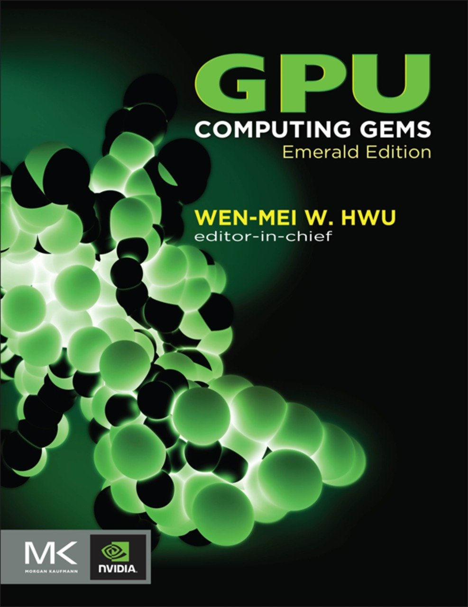
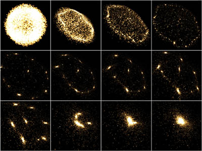
Quantum Mechanics
Quantum Mechanics (in reality)
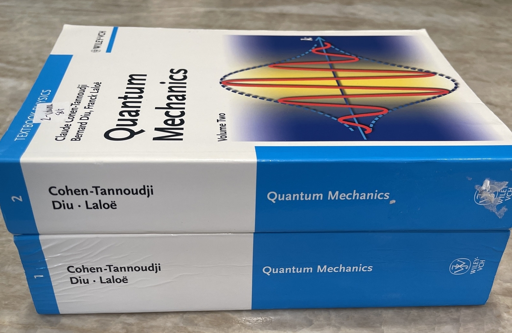
Globural Clusters
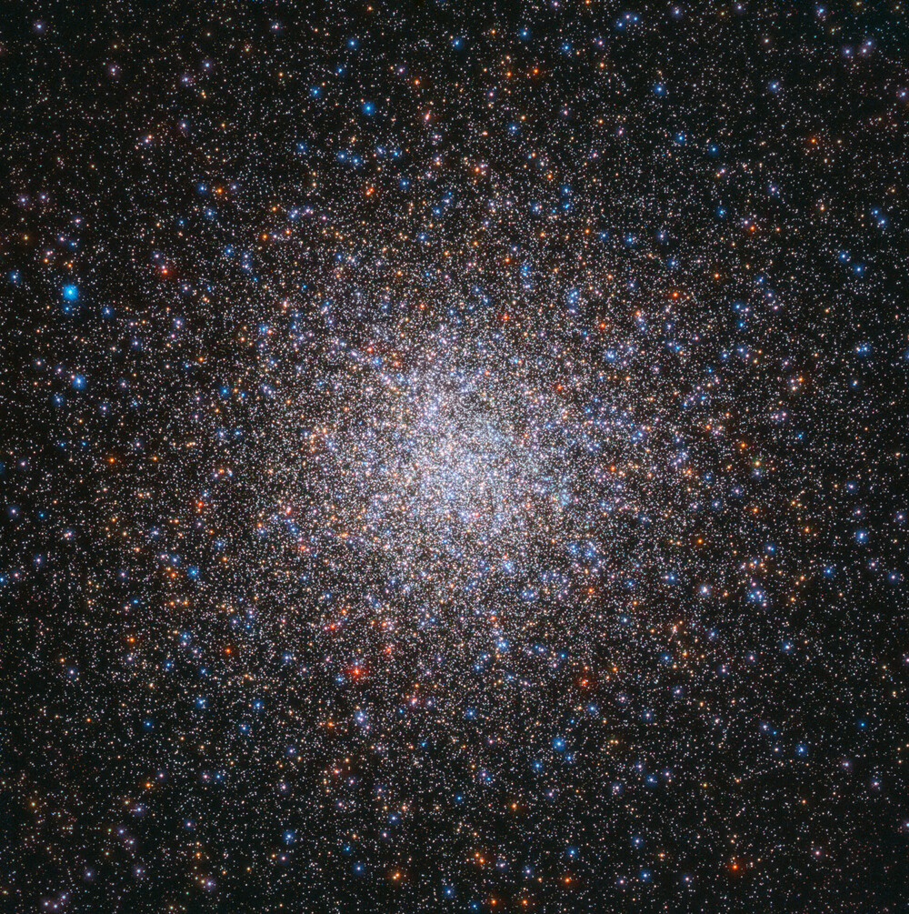
Messier 2 - HST - 55k ly away, 150k stars, 13byr old (Wikipedia)
- Ancients structures in the universe
- Among the densest stellar systems
- Many theories on the formation
- Multiple populations!
- Galactic Archeology (Laboratories)
and guess what?
🔥You can simulate them:🔥
The N-body problem
This is amazing!!!!
Where is this going?
⚠️
Mathematical formulas incoming
1-body problem
1-body problem
2-body problem (1/2)
2-body problem (2/2)
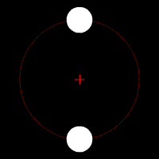
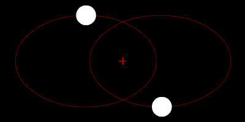
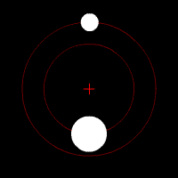
3-body problem (1/2)
(Not the book nor the TV show 🙄)
⍧ℍ⍲⌾⎎
3-body problem (2/2)
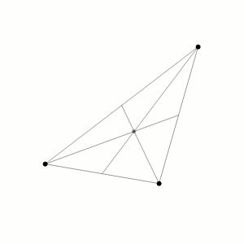
Stationary Centre of mass
CC AS-4.0 - Dnttllthmmnm (Wikipedia)
Periodic solutions
CC AS-4.0 - Perosello (Wikipedia)
$N-$body problem
Philosophiæ Naturalis Principia Mathematica (Isaac Newton)
1687 😱
What happens when two bodies are very close?
$N-$body problem - binaries (1/2)
Binary handling is non-trivial, and without them the energy of the system is lost.
Hot-fix: Softening $\color{orange}{\epsilon}$ to the rescue!
Can the simulation run forever?
$N-$body problem - core collapse (1/2)
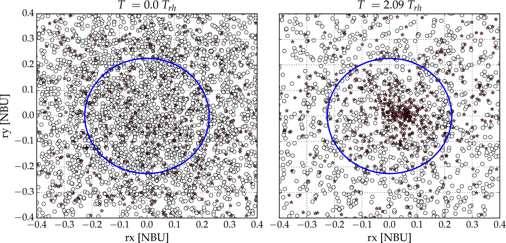
$N-$body problem - core collapse (2/2)
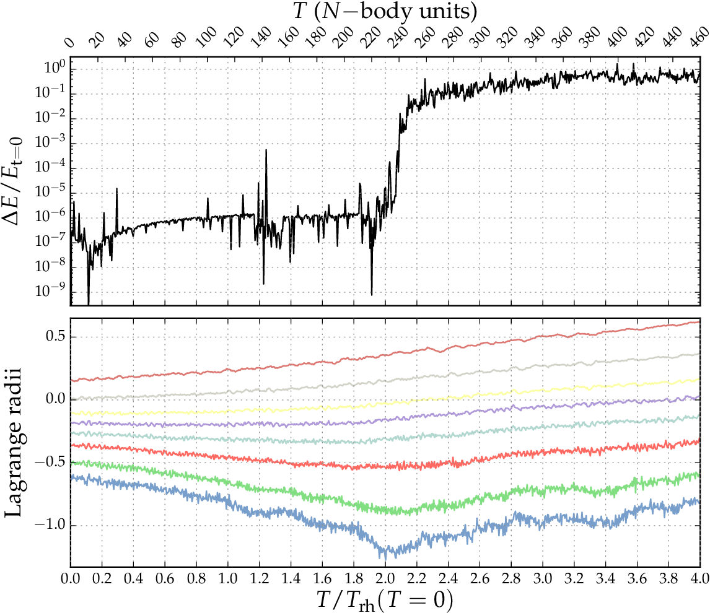
Not properly handling this will create problems
The energy of the binaries is crucial for the cluster
If it gets lost, the cluster is lost
Without Energy conservation nothing makes sense
🫤 Where is this going?
This has everything to do with Python
Let's change bodies by people
1-person problem
(This topic is too dense and complex for this talk)
2-people problem
- Independent of the experience or knowledge, dynamics between two people can be somehow expected
3-people problem
- Adding a third person will most likely change the outcome of a 2-people discussion
- In some cases we might know how things can work...but only a few cases.
N-people problem (~ Community)
- The evolution is not exact and we don't know how it will be in some time
- "Heated" binaries can reduce the energy of the system until the system don't make sense
- You can "Ignore/Softnenned" those interactions, but it's just delay
How do we prevent the collapse?
Our Galaxy
(The Python Community)
There are many Pythons
Python is weird
Python is hard
Python is more than a Programming Language
and that's why I like it
The Python Software Foundation (1/2)
- US 501(c)(3) non-profit
- Promote, protect, and advance the language
- Licenses to ensure public and free distribution
- Hold intellectual property
- Infrastructure, hire personnel, grants, fundraising, and more!
The Python Software Foundation (2/2)
- Is not in charge of all the communities
- Doesn't mediate conflicts in communities
- Doesn't approve features for the language
- Doesn't votes for PEPs or Core Developers
Python Ecosystem Institutions
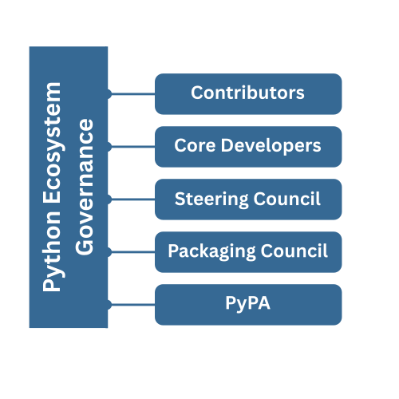
Where do we go from here?
Galaxy Mergers Interactions
NASA/Goddard Space Flight Center and the Advanced Visualization Laboratory at the National Center for Supercomputing Applications, B. Robertson, L. Hernquist
We have been interacting with many galaxies communities
C Programmers improving CPython
(Apparently 'C' stand for 'Canonical' now)
Ruby was once a direct competitor
Julia took many ideas
and you should do that too!
for example...
Rust code
where is rust
Rust shaping Python (1/2)
codeRust shaping Python (2/2)
companies/projectsWhat can you do?
(If you want, no pressure!)
- ...
- ...
- ...
💀First Lie: Post-Newtonian corrections (1/2)
- 1PN: relativistic correction, proportional to $1/c^{2}$
- 2PN: conservative relativistic correction, proportional to $1/c^{4}$
- 2.5PN: dissipative correction, proportional to $1/c^{6}$. orbital energy and angular momentum loss through gravitational-wave emission.
- (3PN, 3.5PN, 4PN, 4.5PN, ...)
💀First Lie: Post-Newtonian corrections (2/2)
💀Second Lie: The collapse is inminent but can be delayed
- Hard binaries: release kinetic energy into the cluster
- BH and NS: provide energy through dynamical interactions
- IMBH: alter central density profile, maybe can prevent?
- External tidal effects
💀Third Lie:
C++ runs the world, and a lot of Python projects are amazing thanks to C++💀Fourth Lie:
"You will never be able to do that"
💀Fourth Lie:
You are able to do that
or at least you can try and share your story
On Astrophysics, Communities and Python
Cristián Maureira-Fredes
maureira.dev
@cmaureir
cmaureir.github.io/pycongr2026_keynote